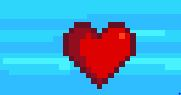
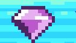
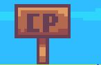

Mecánica del Juego
Controles
Movimiento
Teclas WASD o Flechas direccionales
Saltar
Barra espaciadora
Interactuar
Tecla E
Ataque básico
Click izquierdo del mouse
Habilidad especial
Tecla Q
Menú
Tecla ESC
Items Especiales

Corazón de Vida
Restaura 1 punto de salud al instante. Vital para sobrevivir en combates difíciles.

Gemas Arcanas
Colecciona 5 gemas para desbloquear una habilidad temporal. Se esconden en lugares secretos.

Punto de Control (CP)
Guarda tu progreso. Al morir, reaparecerás en el último CP activado.
Obstáculos Peligrosos

Picos Mortales
Obstáculo que inflige daño al contacto
Los picos son peligrosas trampas que aparecen en zonas estratégicas del mapa:
- Al tocarlos, Zoru pierde 1 punto de vida inmediatamente
- Si caes sobre ellos desde altura, el daño aumenta a 2 puntos
- Algunos picos son móviles y siguen patrones de movimiento
- Se pueden destruir con ciertas habilidades especiales
Consejo: Observa cuidadosamente los patrones de movimiento antes de avanzar.
Consejos de Juego
- Activa los Puntos de Control (CP) tan pronto como los veas
- Colecciona Gemas para acceder a habilidades poderosas
- Usa los Corazones de Vida estratégicamente en combates difíciles
- Memoriza la ubicación de los picos para pasarlos con seguridad
- Explora cada área completamente para encontrar secretos y atajos